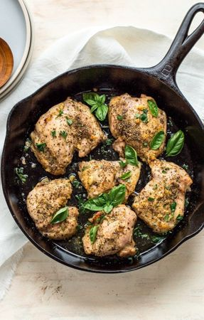

Back to Home
Baked Chicken

Ingredients:
- Chicken
- Marinade
- Pepper
- Garlic Powder
Steps
- take chicken out of packaging and put into bowl/ziplock bag
- put marinade and all seasonings into bag, preheat oven to 400-450f
- after about 20-30 minutes, and once oven is pre-heated, put chicken onto baking pan
- set timer for 30-35 minutes
- check chicken with digital thermometer. If 160-165 (160f has pasteurization time of 15 seconds), it is done.
- remove from oven and serve